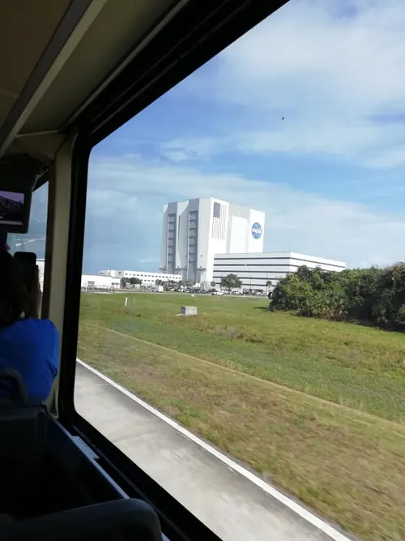
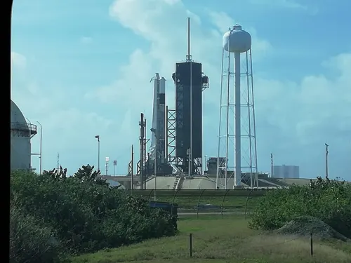
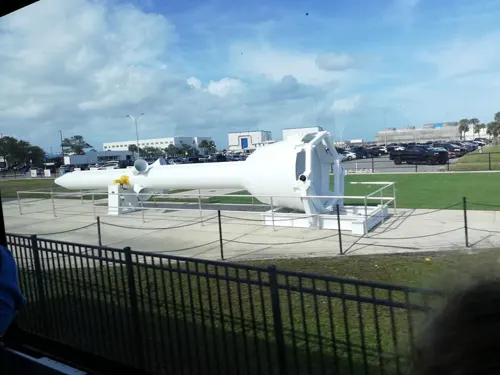
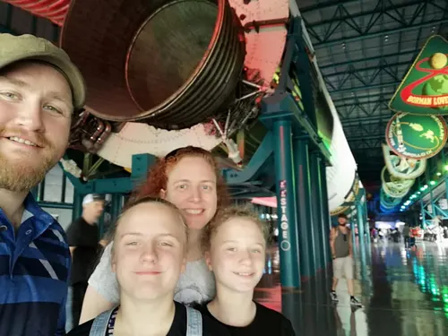
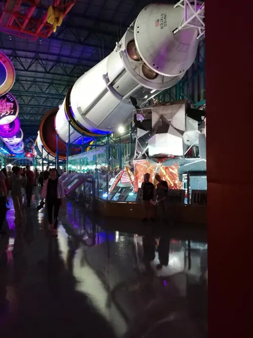
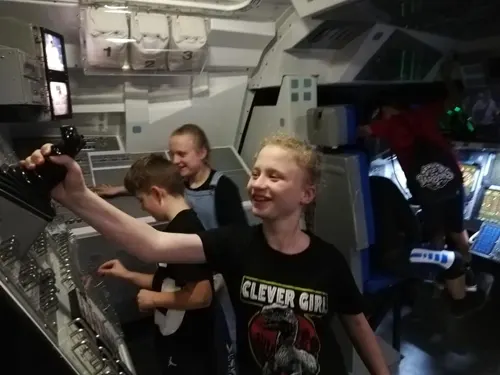
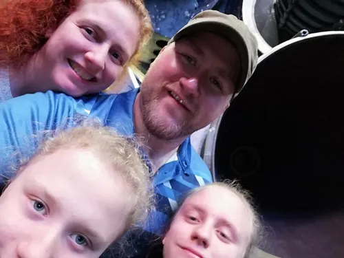
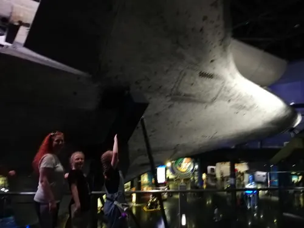
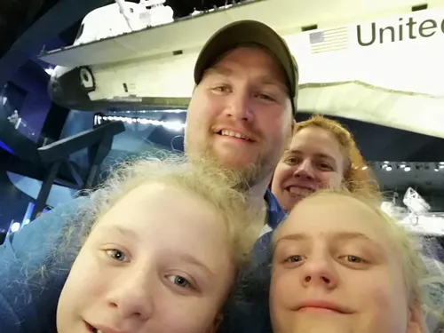

Kennedy Space Center
2020

In 2020 we stopped at Kennedy Space Center on the way home.
The visit covered the entrance, a bus tour past the Vehicle Assembly Building and a launch pad, the Saturn V, a simulator Jessica explored, and Space Shuttle Atlantis — with Jessica, Jasmine, and my redhead companion along.


















